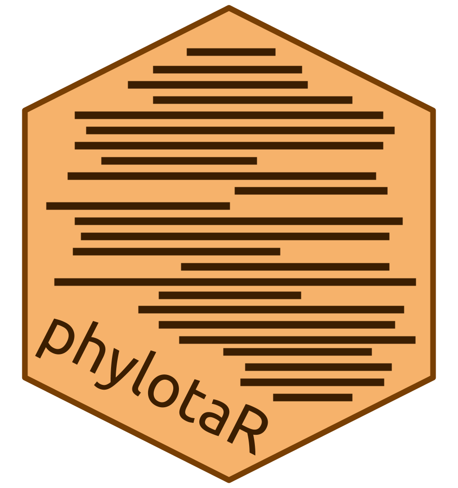

R implementation of the PhyLoTa sequence cluster pipeline. For more information see the accompanying website. Tested and demonstrated on Unix and Windows. Find out more by visiting the phylotaR website.
Install
Currently only the devlopment package is available:
devtools::install_github(repo='AntonelliLab/phylotaR', build_vignettes=TRUE)Full functionality depends on a local copy of BLAST+ (>= 2.0.0). For details on downloading and compiling BLAST+ on your machine please visit the NCBI website.
Pipeline
phylotaR runs the PhyLoTa pipeline in four automated stages: identify and retrieve taxonomic information on all descendent nodes of the taxonomic group of interest (taxise), download sequence data for every identified node (download), identify orthologous clusters using BLAST (cluster), and identify sister clusters for sets of clusters identified in the previous stage (cluster^2) After these stages are complete, phylotaR provides tools for exploring, identifying and exporting suitable clusters for subsequent analysis.

For more information on the pipeline and how it works see the publication, phylotaR: An Automated Pipeline for Retrieving Orthologous DNA Sequences from GenBank in R.
Running
At a minimum all a user need do is provide the taxonomic ID of their chosen taxonomic group of interest. For example, if you were interested in primates, you can visit the NCBI taxonomy home page and search primates to look up their ID. After identifying the ID, the phylotaR pipeline can be run with the following script.
library(phylotaR)
wd <- '[FILEPATH TO WORKING DIRECTORY]'
ncbi_dr <- '[FILEPATH TO COMPILED BLAST+ TOOLS]'
txid <- 9443 # primates ID
setup(wd = wd, txid = txid, ncbi_dr = ncbi_dr)
run(wd = wd)The pipeline can be stopped and restarted at any point without loss of data. For more details on this script, how to change parameters, check the log and details of the pipeline, please check out the package vignette.
library(phylotaR)
vignette("phylotaR")Timings
How long does it take for a phylotaR pipeline to complete? Below is a table listing the runtimes in minutes for different demonstration, taxonomic groups.
| Taxon | Taxa | Sequences | Clusters | Taxise | Download | Cluster | Cluster2 | Total |
|---|---|---|---|---|---|---|---|---|
| Anisoptera | 1143 | 10619 | 784 | 0.75 | 14 | 14 | 0.017 | 28 |
| Acipenseridae | 51 | 2417 | 332 | 0.067 | 35 | 1.5 | 0 | 37 |
| Tinamiformes | 25 | 250 | 98 | 0.05 | 1.9 | 0.083 | 0 | 2 |
| Aotus | 13 | 1499 | 193 | 0.05 | 2 | 0.12 | 0 | 2.1 |
| Bromeliaceae | 1172 | 9840 | 721 | 0.7 | 18 | 9.4 | 0.017 | 28 |
| Cycadidae | 353 | 8331 | 540 | 0.18 | 13 | 3.4 | 0 | 17 |
| Eutardigrada | 1 | 3 | 4 | 0.28 | 5 | 0.82 | 0 | 6 |
| Kazachstania | 26 | 164 | 33 | 0.067 | 9.3 | 1.1 | 0.033 | 10 |
| Platyrrhini | 273 | 19384 | 543 | 0.2 | 30 | 1.6 | 0.28 | 32 |
To run these same demonstrations see ´demos/demo_run.R´.
Reference
Bennett, D., Hettling, H., Silvestro, D., Zizka, A., Bacon, C., Faurby, S., … Antonelli, A. (2018). phylotaR: An Automated Pipeline for Retrieving Orthologous DNA Sequences from GenBank in R. Life, 8(2), 20. DOI:10.3390/life8020020
Sanderson, M. J., Boss, D., Chen, D., Cranston, K. A., & Wehe, A. (2008). The PhyLoTA Browser: Processing GenBank for molecular phylogenetics research. Systematic Biology, 57(3), 335–346. DOI:10.1080/10635150802158688
Links
- Browse source code at
https://github.com/AntonelliLab/phylotaR#readme - Report a bug at
https://github.com/AntonelliLab/phylotaR/issues
Developers
- Hannes Hettling
Author - Rutger Vos
Author - Alexander Zizka
Author - Dom Bennett
Author, maintainer - Alexandre Antonelli
Author